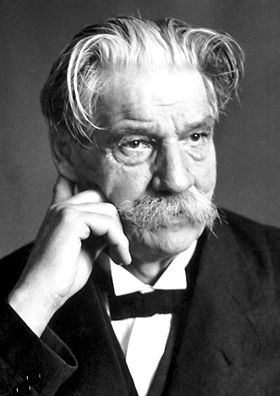

obrázek: https://marvin.milimetr.org/pisemka2/schweitzer.jpg
{kind=link}
text: https://marvin.milimetr.org/pisemka2/schweitzer.txt
Albert Schweitzer
Albert Schweitzer (14. ledna 1875, Kaysersberg, Horní Alsasko, dnes Francie – 4. září 1965, Lambaréné, dnes Gabon) byl francouzský protestantský teolog, misionář, filozof, etik, muzikolog (proslul především jako jeden z nejvýznamnějších znalců, vykladačů a interpretů díla Johanna Sebastiana Bacha), varhanní virtuóz a lékař. V roce 1952 obdržel Nobelovu cenu za mír za svůj altruismus, úctu k životu a neúnavnou humanitární práci, která pomohla uvést do života myšlenku bratrství mezi lidmi a národy.
Schweitzer pocházel z Alsaska – prostoru, na který si od nepaměti dělaly nárok Francie i Německo. S tím souvisí i Schweitzerova rodná francouzština celoživotně poznamenaná alsaským německým dialektem. Alsasko v té době bylo součástí Německa a jeho obyvatelé měli německé občanství. Byl synem protestantského (luterského) faráře, matka byla dcerou evangelického pastora. Měl hudební nadání a rodiče ho od dětství vedli k hudebnímu vzdělání. Už jako devítiletý hrával na varhany v místním kostele. V roce 1893 odmaturoval na střední škole v Mylhúzách a podle rodinné tradice šel studovat filozofii a teologii na univerzitách ve Štrasburku, Paříži a Berlíně. Při studiu se zdokonaloval ve hře na varhany a získal odborné znalosti o konstrukci těchto nástrojů. Stal se vynikajícím varhaníkem, interpretoval zejména dílo J. S. Bacha.
V roce 1904 se rozhodl, že důkladně změní svůj život. Podnětem k tomu byl článek v časopise francouzské misionářské společnosti, který popisoval těžký život domorodců v rovníkové Africe. Chtěl se vypravit do Afriky, aby mohl přímo na místě pomáhat potřebným. V roce 1905 začal studovat medicínu na štrasburské univerzitě. Ke studiu musel mít povolení vlády, která to vyřešila výjimkou v situaci, kdy člen akademického sboru je zároveň veden jako řádný posluchač. Studia medicíny dokončil v roce 1912, absolvoval i postgraduální studium tropické medicíny v Paříži. Během svých studií pokračoval v pedagogické práci na univerzitě i ve své činnosti muzikologa a hudebníka. Oženil se s učitelkou Helenou Bresslauovou, která se přihlásila do ošetřovatelského kurzu, aby se stala jeho pomocnicí v péči o nemocné domorodce.
Roku 1913 spolu manželé Schweitzerovi odjeli do Afriky s nákladem léků a zdravotních přístrojů do misijní stanice v Lambaréné (tehdy Francouzská rovníková Afrika, dnes Gabon). Albert Schweitzer tam z vlastních prostředků založil nemocnici, kterou financoval jednak z darů, jednak z prostředků, které vydělával jako varhanní virtuóz prostřednictvím koncertů. Vezl si s sebou i speciálně upravené piano s varhanovými pedály. V nemocnici, založené hluboko v pralese, byli léčeni lidé, kteří do té doby žádnou lékařskou péči neměli. Mnozí trpěli leprou, malárií, úplavicí, spavou nemocí nebo svrabem. Schweitzer byl velkým ochráncem zvířat a kromě lidí léčil i zvířata a staral se o ně. Jeho myšlenka úcty k životu vycházela z přesvědčení, že všechny formy života jsou si rovny. Je třeba mít odpovědnost ke všemu živému, včetně rostlinstva. Život v žádných svých projevech nesmí být potlačován a ničen.